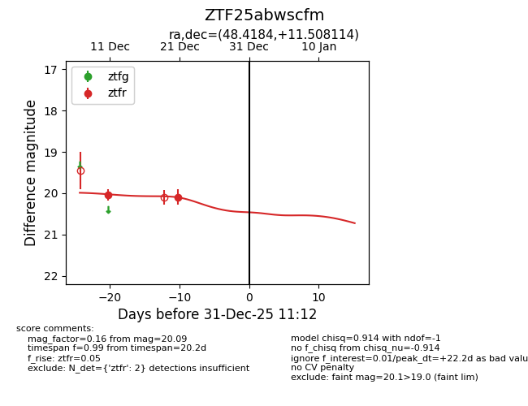
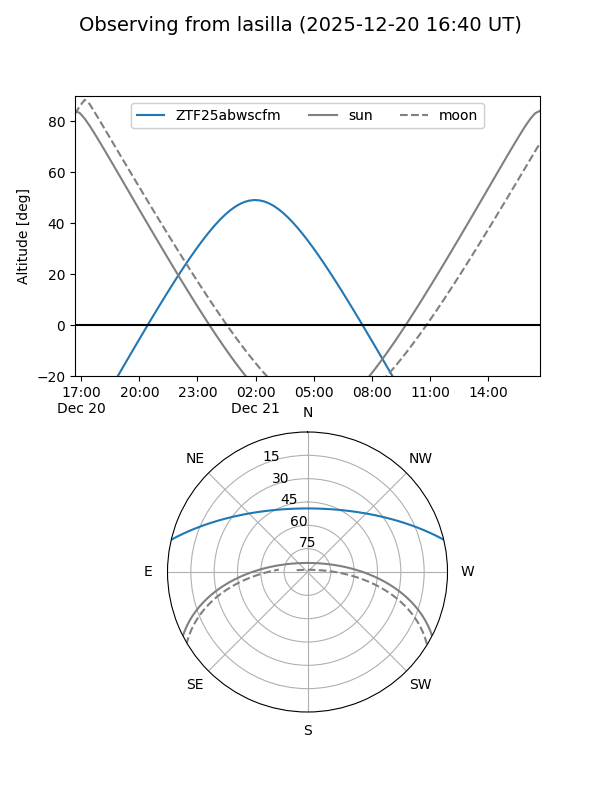
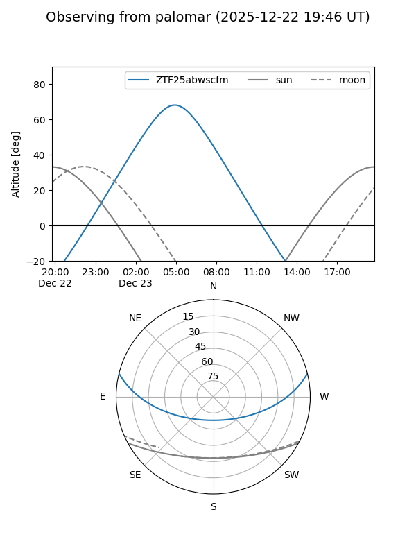
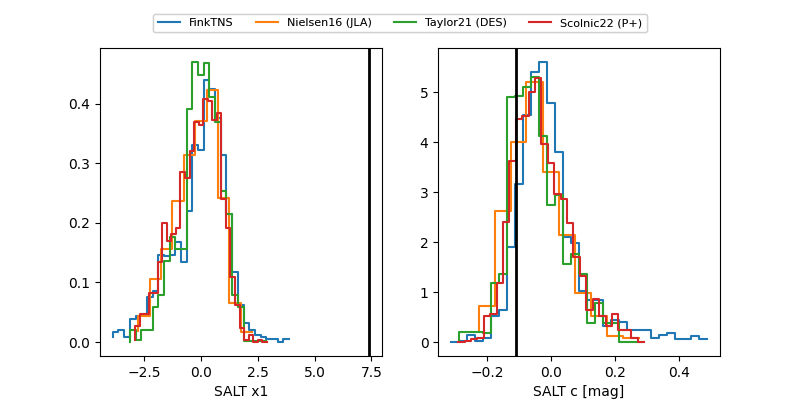

ZTF25abwscfm
Target ZTF25abwscfm at 2025-12-21 05:34
Aliases and brokers:
FINK: fink-portal.org/ZTF25abwscfm
Lasair: lasair-ztf.lsst.ac.uk/objects/ZTF25abwscfm
ALeRCE: alerce.online/object/ZTF25abwscfm
alt names
ZTF25abwscfm (ztf,fink_ztf)
Coordinates:
equatorial (ra, dec) = 48.4184,+11.50811
equatorial (HMS+DMS) = 03:13:40.43,+11:30:29.21
galactic (l, b) = (169.4169,-38.20621)
Flags:
Photometry:
last ztfr=20.09
2 ztfr detections
Lightcurve

Visibility


Additional plots
